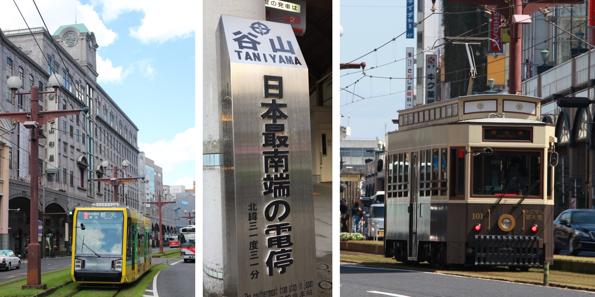

まず、市電の道路との併用区間では、軌道敷緑化やセンターポール化が全国に先駆けて行われていることです(写真左)。軌道敷緑化とは軌道内に芝生を敷くことで、騒音軽減や景観向上といった効果があります。また、センターポール化とは軌道中央に架線柱を建てることで、蜘蛛の巣のように張られた架線をスッキリさせる効果があります。これらの整備により、素晴らしい都市景観が実現しました。
次に、市電は観光にもおすすめです。鹿児島の陸の玄関口である鹿児島中央駅から市電を使えば約8分で天文館に行けます。鶴丸城跡や水族館などの観光地へのアクセスにも便利です。また、谷山電停には日本最南端の電停の標柱(写真真ん中)があるほか、土日祝日には大正時代から昭和30年代まで運行していた木製電車をイメージした観光レトロ電車「かごでん」(写真右)が運行され、車内ではボランティアによる観光案内が行われています。